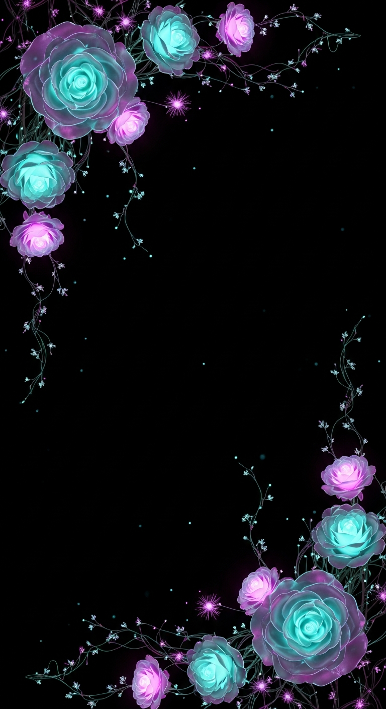
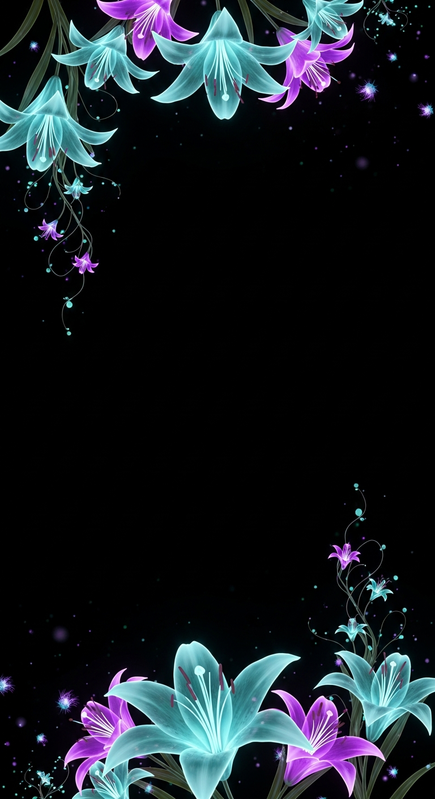
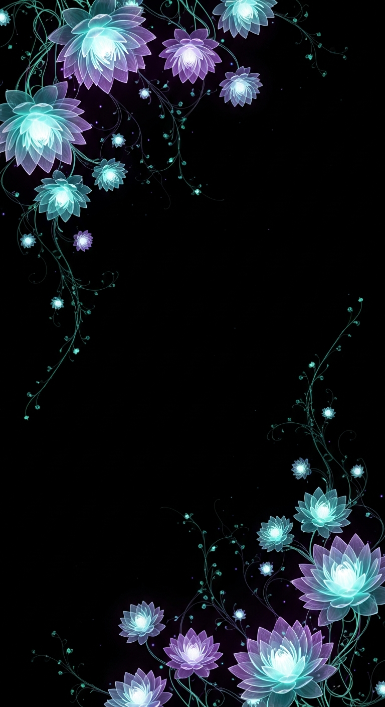
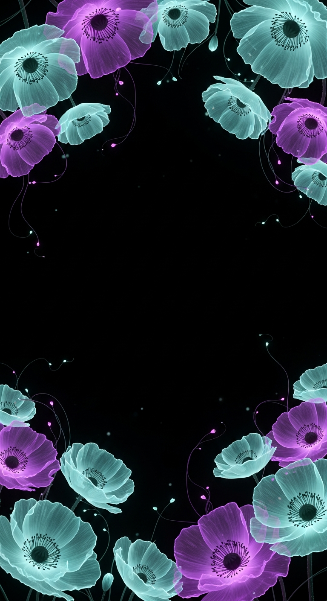
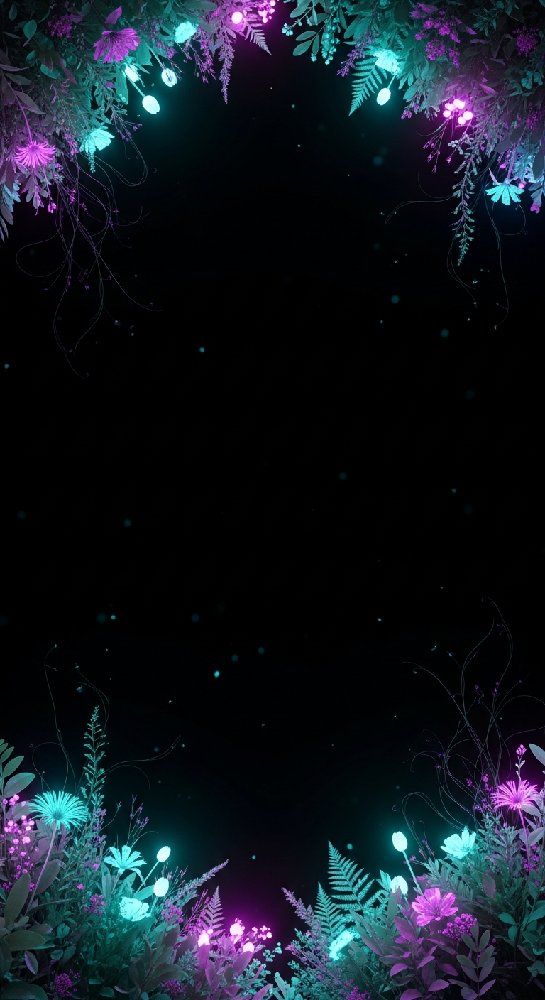
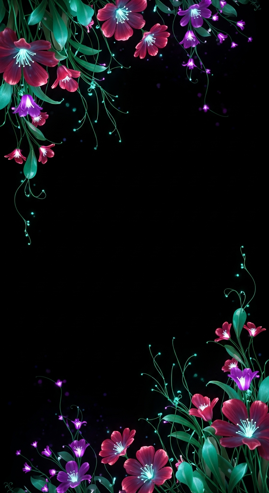

Generated with Imagen 4 Ultra at 9:16 — translucent, glowing, volumetric 3D blooms anchored in the corners with a clear dark center, matching your reference's quality. Pick a flower + palette and I'll finalize it (clean upscale, transparent-center overlay, and a gently-animated WebM).
Tell me "go with the wildflowers" (or any), plus tweaks — warmer (red/violet) / cooler (teal) · denser / sparser · which corners. I can also regenerate variations of your pick.

Glowing layered roses — classic, romantic.

Open glowing lilies + stamens — refined.

Layered luminous lotus — serene, premium.

Broad airy petals + dark centers — open.

Lush mixed glow + ferns — closest to the reference.

Crimson + violet blooms, teal stems — on-brand color.